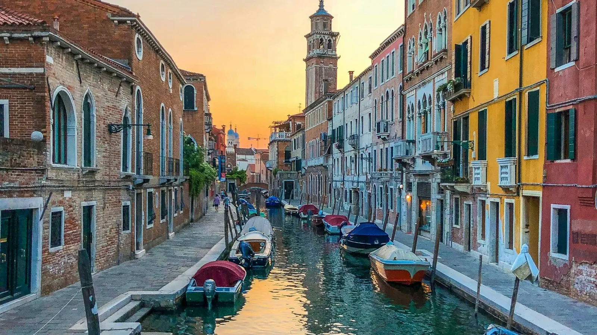

Come funzionano gli scioperi dei treni in Italia
- Vengono annunciati in anticipo, di solito diversi giorni prima.
- Gli scioperi nazionali del trasporto ferroviario spesso vanno dalle 21:00 di un giorno alle 21:00 del giorno dopo. Gli scioperi regionali o aziendali possono essere più brevi, per esempio una mattina o una fascia diurna.
- Uno sciopero può riguardare Trenitalia, Italo, operatori regionali come Trenord, oppure solo alcuni. Controlla quali aziende sono coinvolte.
Dove controllare le date
- Il calendario ufficiale degli scioperi del Ministero dei Trasporti (scioperi.mit.gov.it).
- Le pagine news e le app di Trenitalia, Italo e degli operatori regionali come Trenord.
- Le email di prenotazione: spesso gli operatori avvisano i passeggeri dei treni coinvolti.
Treni e fasce garantite
La legge italiana prevede che alcuni servizi essenziali funzionino anche durante lo sciopero:
| Servizio | Cosa circola |
|---|---|
| Treni regionali, giorni feriali | Garantiti nelle fasce 06:00 – 09:00 e 18:00 – 21:00. |
| Treni a lunga percorrenza (Frecce, Intercity, Italo) | I treni nella lista dei garantiti pubblicata da ogni operatore per quello sciopero. |
| Treni già in viaggio | Di solito arrivano a destinazione se l'arrivo è previsto entro circa un'ora dall'inizio dello sciopero. |
Un treno che non è nella lista dei garantiti non è per forza cancellato (molti circolano lo stesso), ma non puoi contarci.
Rimborsi e cambi
Trenitalia
- Frecce e Intercity: puoi chiedere il rimborso fino alla partenza prevista del treno, oppure cambiare treno in base alla disponibilità.
- Biglietti regionali: di solito il rimborso va chiesto entro la mezzanotte del giorno prima dello sciopero.
Italo
Se il tuo treno non è garantito, puoi passare a un treno garantito o annullare gratis prima della partenza, online o tramite il servizio clienti Italo.
Le regole possono cambiare a ogni sciopero, quindi leggi sempre l'avviso dell'operatore per la tua data.
Il giorno dello sciopero
- Viaggia nelle fasce garantite se dipendi dai regionali: parti presto la mattina o la sera.
- Passa a un treno a lunga percorrenza garantito se il tuo non è nella lista.
- Valuta le alternative: autobus a lunga percorrenza, un volo interno tra città lontane o un'auto a noleggio per una giornata su strada.
- Tieni la giornata flessibile. Metti prima musei e passeggiate e lo spostamento in un orario che sai coperto.
- Guarda i tabelloni delle partenze. I treni cancellati riportano soppresso; i ritardi riportano ritardo.
Parole da conoscere
Pronto a prenotare?
Link affiliati: se prenoti, 687 può ricevere una commissione senza costi extra per te.
Quando il piano cambia, riorganizza: non ricominciare da zero.
In 687 Italy, Signals permette ai viaggiatori di segnalare e confermare disagi come gli scioperi, e i messaggi ti tengono aggiornato. Se perdi un treno, Rescue si concentra sulla prossima cosa pratica da fare, e Smart Route riorganizza il resto della giornata con ciò che ci sta ancora. Nei giorni di spostamento, Check trains, Check flights e Naviga sono a portata di tocco.